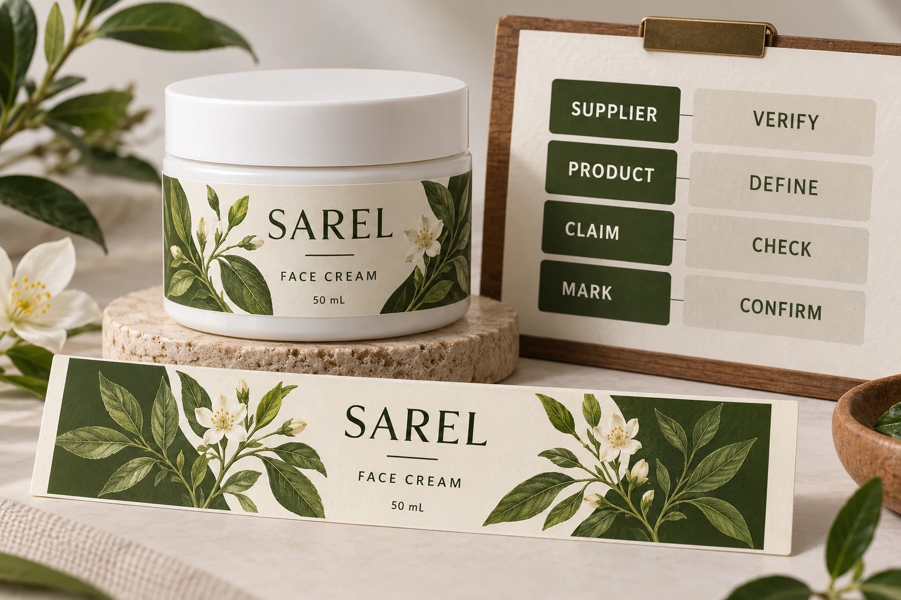

Define which packaging component the requirement covers
Start by naming the component. Is the requirement for the adhesive paper label, a carton, an insert or another supplied product? A jar assembled from several materials should not acquire a blanket environmental description because one paper component has a particular claim.
Write the requirement into the purchasing brief before choosing a decorative paper appearance. The visual texture of a sample cannot establish its certified status, supply-chain claim or suitability for the intended bottle conditions.
Keep performance questions alongside the claim review. The waterproof-materials guide discusses material and use conditions. Certification evidence and physical suitability answer different questions; neither substitutes for the other.
Distinguish a sales claim from an on-product mark
FSC guidance on claims and labels distinguishes a claim on sales or delivery documents from an on-product label. The proposed artwork therefore needs more than an instruction to use FSC paper.
Ask what claim will accompany the actual supplied product and how it will appear in the relevant order documentation. Separately identify whether the artwork will carry an on-product mark and who is authorised to obtain its approval. Do not use a copied graphic as the starting evidence.
The distinction matters even where the supplier has provided genuine certification information. A company reference, an order-specific product claim and permission for a particular artwork treatment are related records with different jobs.
Verify the final supplying company and relevant scope
FSC US on-product guidance directs brands to check the final supplying company and work with the certified supplier on the mark approval. Do not stop at a certificate for an upstream mill if the question concerns the finished labels you are buying.
Use FSC public search to check the exact legal identity and relevant current status and scope. Match the reference to the company supplying the order. Where the record is unclear, request clarification through the appropriate supplier or certification route.
A search result is one input. It does not automatically validate every product that company sells or the wording on your purchase order. Ask the supplier to connect the proposed product and claim to the transaction, and preserve the response with the job record.
Build a claim record before releasing the graphic
Use this editorial worksheet to organize the review. It does not replace FSC rules or an authorised approval.
| Item | Evidence or answer to obtain | Hold point |
|---|---|---|
| Component | Exact supplied paper-label product and requirement | The brief only says sustainable packaging |
| Supplier | Final supplying legal identity | A different company appears on the certificate |
| Public reference | Relevant certificate/licence information, current status and scope | Identity or scope does not match the proposal |
| Transaction | Supplier's stated claim for the actual product/order | Only a generic stock brochure is available |
| Artwork | Proposed mark and placement for the intended component | A copied logo has no approval trail |
| Approval | Responsible authorised route and confirmed result | The printer has not confirmed the approved version |
| Delivery record | Relevant sales/delivery claim linked to the received product | Received documentation cannot be reconciled |
Work from component and supplier to transaction and artwork. Where a mismatch appears, ask the responsible party to resolve it before approving the claim. If a material or supplying arrangement changes, revisit the affected evidence instead of carrying a previous certificate screenshot into a different order.

Two reasonable briefs can lead to different artwork
One hypothetical brand makes a verified certified-paper requirement part of its procurement brief and wants an authorised on-product mark. That project needs the supplying arrangement, product claim and mark approval resolved before the final artwork can be released.
Another brand is still comparing paper appearance and performance and has not established a certified supply arrangement. It can discuss those options without adding a mark that has not been supported. A paper-look design is not evidence that the first project's requirement has been met.
Neither route justifies an unsupported whole-pack statement. Keep the scope clear when the cream jar, lid, adhesive, release liner and decorative paper are different components. Do not extend the paper claim into a recycling outcome or an assurance about the cosmetic formula.
Keep collection and material claims separate
The release-liner collection guide addresses spent material at the filling site. A paper face material claim does not establish that a particular liner can enter a local collection route. Ask the collector about the actual waste stream separately.
For custom cosmetic bottle labels, send the container, dimensions, quantity by design and the exact paper/claim requirement. Ask what documented supplying arrangement is available for review; this article makes no claim that YT Labels holds FSC certification or can supply a particular certified construction. Use the inquiry form to prepare the question, then send supporting references by email or WhatsApp because attachments are not uploaded by the form. Confirm the actual evidence and authorised artwork route before approving a mark.